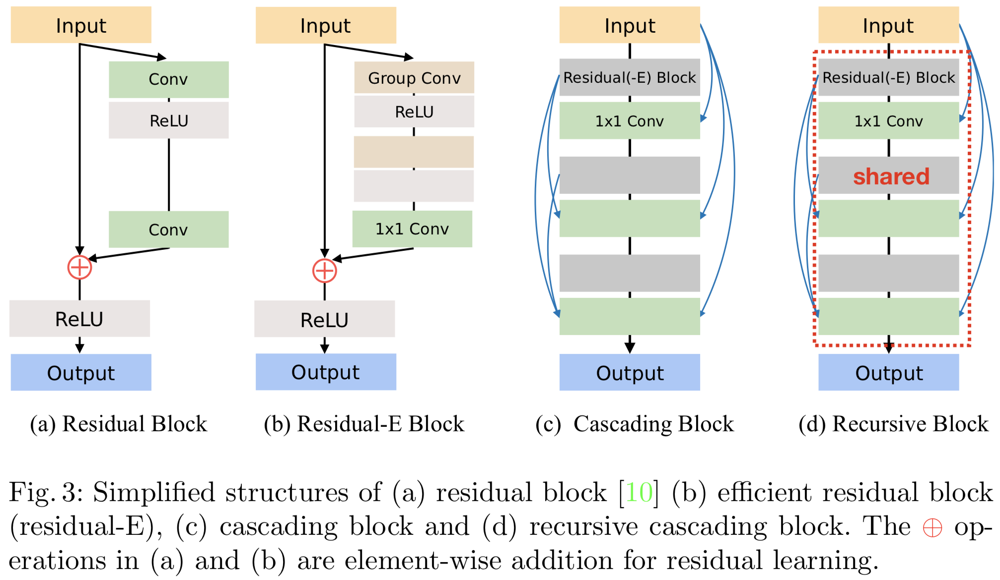

Fast, Accurate, and, Lightweight Super-Resolution
with Cascading Residual Network
with Cascading Residual Network
Abstarct
In recent years, deep learning methods have been successfully applied to single-image super-resolution tasks. Despite their great performances, deep learning methods cannot be easily applied to real-world applications due to the requirement of heavy computation. In this paper, we address this issue by proposing an accurate and lightweight deep learning model for image super-resolution. In detail, we design an architecture that implements a cascading mechanism upon a residual network. We also present a variant model of the proposed cascading residual network to further improve efficiency. Our extensive experiments show that even with much fewer parameters and operations, our models achieve performance comparable to that of state-of-the-art methods.
Our Methods
We provide the codes and results of our methods. [Github]
Results
Bibliography
@article{ahn2018fast,
title={Fast, Accurate, and, Lightweight Super-Resolution with Cascading Residual Network},
author={Ahn, Namhyuk and Kang, Byungkon and Sohn, Kyung-Ah},
journal={arXiv preprint arXiv:1803.08664},
year={2018}
}